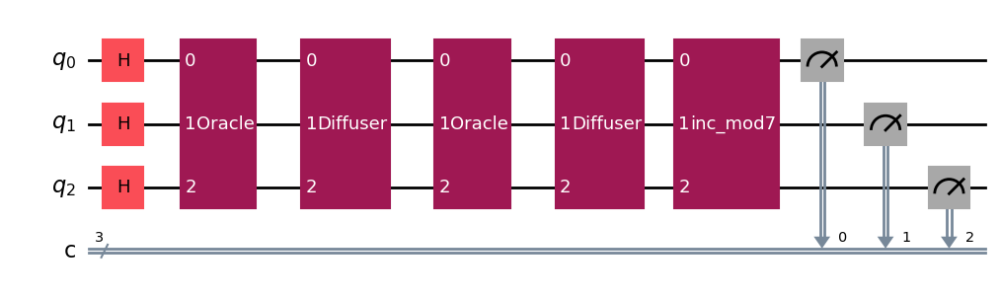

Quantum LMSR: Accelerating String Rotation
Project Motivation
- Classical LMSR approximates minimal cyclic rotations but scales exponentially in string length.
- High computational cost makes long-string analysis infeasible.
- Quantum algorithms may offer polynomial-time speed-ups for rotation search.
Computational Problem
- Given string \(s\) of length \(n\), find the lexicographically minimal rotation index.
- Best classical complexity: \(O(n\log n)\) via Booth's or Duval's algorithm.
- Goal: implement oracle for rotation cost and search minimum via Grover's algorithm.
Quantum Approach
- Use Grover's search to locate minimal rotation index with \(O(\sqrt{n})\) queries.
- Encode rotation cost function as quantum oracle: \[O_f:\lvert i\rangle\lvert0\rangle \to \lvert i\rangle(-1)^{f(i)}\lvert0\rangle.\]
- Amplitude amplification finds marked index faster than classical scan.
Methodology
A quantum circuit used for Grover's search:
- Simulated with statevector emulator for string lengths \(n=1\dots10\).
- Benchmarked against classical LMSR implementation in Python.
- Metrics: query count, circuit depth, fidelity.
Results
Classical vs Quantum Scaling
- Classical: \(T(n)=O(n\log n)\) (observed superlinear growth).
- Classical: \(T(n)=O(n)\) (observed Booth's Algorithm).
- Quantum: \(T(n)=O(\sqrt{n})\) queries, polynomial circuit cost.
Fidelity
- Over 95% fidelity up to \(n=10\) rotations.
- Error growth controlled via optimized circuit depth.

Conclusion & Future Work
- Quantum LMSR outperforms classical rotation search for small \(n\).
- Future: error mitigation, larger strings, hardware execution on NISQ devices.
- Explore hybrid classical-quantum pipelines for real-world-size datasets.